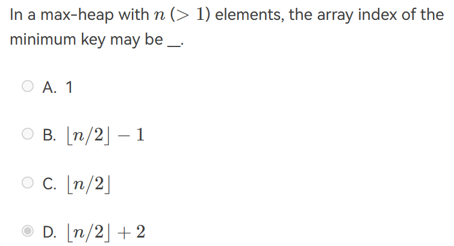
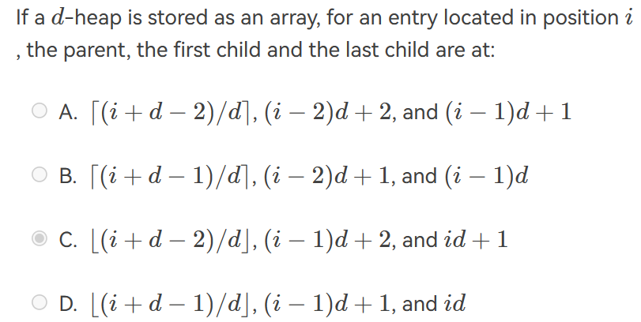
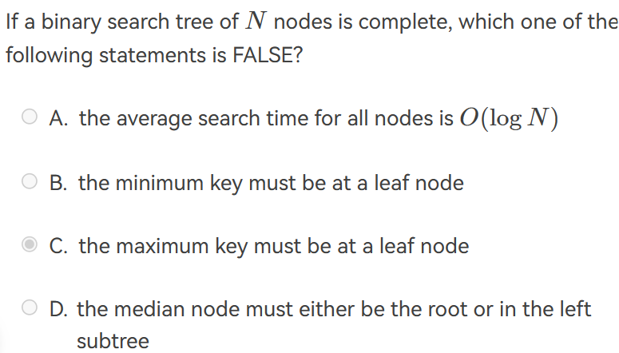
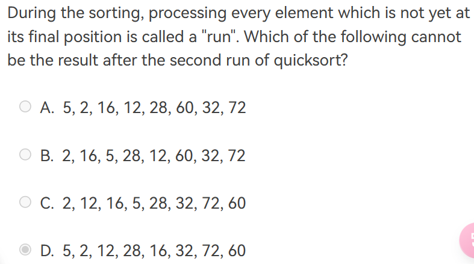
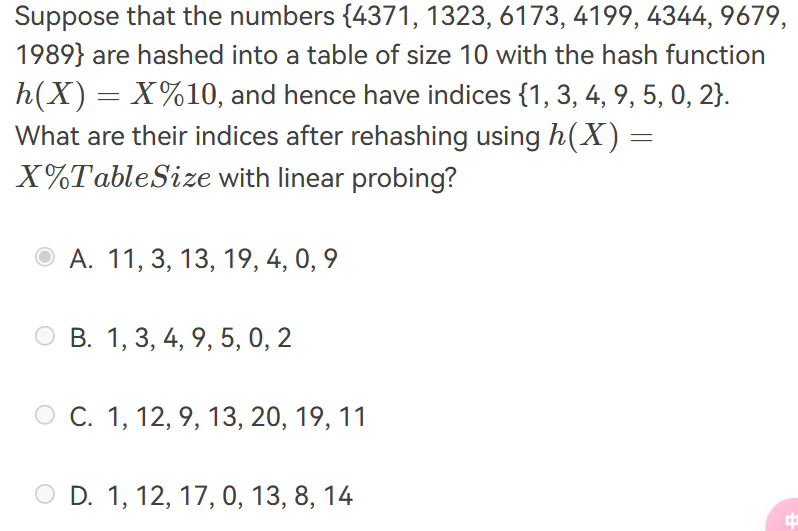

数据结构基础理论题¶
约 2299 个字 11 行代码 预计阅读时间 8 分钟
算法分析¶
if ( A > B ){
for ( i=0; i<N*2; i++ )
for ( j=N*N; j>i; j-- )
C += A;
}
else {
for ( i=0; i<N*N/100; i++ )
for ( j=N; j>i; j-- )
for ( k=0; k<N*3; k++)
C += B;
}
The lowest upper bound of the time complexity is \(O(N^3)\)
本来看到for循环里有个n*n，直接以为复杂度是\(O(N^4)\),但是要注意当i到n时下层循环就进不去了！
- 分析复杂度：
可以用直接代入法，直到\(N/3^K\)为\(1\)： $$ T(N)=T(N/3)+1=\cdots=T(N/3^k)+k,k=clogN $$ 所以第一个式子的时间复杂度为\(O(logN)\),类似地，第二个式子的时间复杂度为\(O(N)\)。
- 斐波那契数列递归版本的时间复杂度:\(\Theta (F_N)\)，空间复杂度是\(O(N)\), 迭代版本的复杂度\(O(N)\)，空间复杂度是\(O(1)\)。
- 与数据元素本身的形式、内容、相对位置、个数无关的是数据的逻辑结构。
线性表¶
- For a sequentially stored linear list of length \(N\), the time complexities for deleting the first element and inserting the last element are \(O(1)\) and \(O(N)\), respectively.
线性表是一种概念，可以用数组和链表实现。sequentially stored linear list代表数组，删除第一个元素复杂度是\(O(N)\), 因为需要将所有元素向前移动。
-
To merge two singly linked ascending lists, both with N nodes, into one singly linked ascending list, the minimum possible number of comparisons is:\(O(N)\) 把一个接到另一个后面，但是找第一个链表的尾需要遍历一遍。
-
Suppose that an array is used to store a circular queue, the value of
frontmaye be greater thanrear. -
将长度为\(m,n\)的两个单链表合并为一个单链表的时间复杂度是\(O(1)\)! 只需将一个接在另一个后面即可，merge的复杂度是\(O(M+N)\)。
-
Cirular queue is defined to be a queue implemented by a circularly linked list or a circular array(F) 循环队列是一个抽象的概念，不局限于实现方式。
-
判断循环队列为空的条件：
Q.front==Q.rear， 判断为满的条件：front==(rear+1)%size -
multilist 是一种递归的数据结构。
树¶
- It is always possible to represent a tree by a one-dimensional integer array.
对的。我们知道任何二叉树都可以通过一维数组表示，而任何树都可以表示成二叉树。(FirstChild-NextSibiling)
- There exists a binary tree with 2016 nodes in total, and with 16 nodes having only one child.
错误。假设没有孩子的结点个数\(n_0\), 只有一个孩子的结点个数为\(n_1\), 两个孩子的结点个数\(n_2\). 则可得到如下等式： $$ n_0+n_1+n_2=2016\1+n_1+2n_2=2016 $$ 可以得到当\(n_1=16\)时\(2n_2=1999\)，故错误。
- If a general tree \(T\) is converted into a binary tree \(BT\), then which of the following \(BT\) traversals gives the same sequence as that of the post-order traversal of \(T\)?
In-order traversal.
- In a binary search tree, the keys on the same level from left to right must be in sorted (non-decreasing) order. (T)
-
In a binary search tree which contains several integer keys including 4, 5, and 6, if 4 and 6 are on the same level, then 5 must be their parent.(F)
-
Given a binary search tree with 20 integer keys which include 10, 11, and 12, if 10 and 12 are on the same level, then 11 must be their common ancestor.注意与上题的区别，common ancestor 不一定是parent。
-
For a binary search tree, in which order of traversal that we can obtain a non-decreasing sequence? inorder traversal.
-
There are more NULL pointers than the actual pointers in the linked representation of any binary tree.(?)
-
An inorder threaded binary tree cannot make the postorder traversal more efficient.
-
convert a general tree \(T\) into a binary tree \(BT\), there are \(n_0\) leaf nodes in \(T\) and \(m_0\) leaf nodes in \(BT\). Then \(n_0\ge m_0\)。
-
If the inorder and the postorder traversal sequences of a binary tree have exactly the same order, then none of the nodes in the tree has a right subtree.
-
二叉树是度为2的树。错误！度为0/1/2。
-
先序中序后序遍历是对根节点而言的，叶子结点的顺序不变。
-
一颗树转化为二叉树，先序等于先序，原树的后序等于BT的中序。
-
前序遍历的时间复杂度 \(O(N)\),空间复杂度 \(O(H)\)。
堆¶

\(\lfloor n/2\rfloor\)是最后一个结点的父亲，不可能为最小值，因此唯一有可能的就是大于\(n/2\)的index。


注意到这是完全二叉搜索树，最大值可能在上一层最右边的结点,该节点只有左儿子。
-
The best "worst-case time complexity" for any algorithm that sorts by comparisons only must be \(O(N\log N)\)。 最好的方法是堆排序。
-
建堆的比较次数\(2N-2\log N\)。最多是\(2N-2\)。
图¶
- In a directed graph, the sum of the in-degrees must be equal to the sum of the out-degrees of all the vertices.
入度和出度对应一条边的起始和结束，如果出入度不相等说明有一条边只和一个顶点相连。
- If graph G is NOT connected and has 35 edges, then it must have at least ____ vertices
9个顶点的连通图最多有\(C_n^2=36\)条边，35也符合，8个顶点连通图最多有28条边，不符合。因此要使得图不连通，至少要10个vertice.
- A graph with 90 vertices and 20 edges must have at least __ connected component(s).
由欧拉公式，对于连通图\(r=e-v+2\), 将一个图的一个连通分量看作一个连通图，若有\(k\)个连通分量，则\(R=E-V+2k\), 但是所有连通分量最外部的区域被算了\(k\)次，因此最终\(R=E-V+k+1\), 代入可得\(k=R+69\), 为使连通分量最小，取\(R=1\).
- Given an undirected graph \(G\) with 16 edges, where 3 vertices are of degree 4, 4 vertices are of degree 3, and all the other vertices are of degrees less than 3. Then \(G\) must have at least __ vertices.
根据\(\sum (degree)=2e\), 得到\(32=12+12+d(v-7)\), 由于\(d<3\),故\(8\le 2(v-7)\)。
- A graph with 50 vertices and 17 edges must have at most ____ connected component(s).
- If an undirected graph \(G=(V,E)\) contains 10 vertices. Then to guarantee that \(G\) is connected in any cases, there has to be at least __ edges.
9个vertices的完全图加上一条边。
- 一个有权图可能没有最小生成树。
- Apply DFS to a directed acyclic graph, and output the vertex before the end of each recursion, the output sequence will be reversely topologically sorted.
- Graph G is an undirected completed graph of 20 nodes. Is there an Euler circuit in G? If not, in order to have an Euler circuit, what is the minimum number of edges which should be removed from G?
20个结点的无向完全图每个结点的degree是19，而Euler Circuit存在的条件是每个顶点的度数都是even的。删除一条边会有两个结点减少一个度，因此至少要删除十条边。
- 如果无向图必须进行两次BFS才能访问其所有顶点，则\(G\)一定有两个连通分量。
- If DFS from any vertex can visit every other vertices, then the topological order must not exist。 一定有环存在。
- If a graph has a topological sequence, then its adjacency matrix must be triangular (F) 无向图是对称的，不一定是三角。
- 每两点间相对位置确定，则DAG唯一。
- Prim算法适合稠密图，Kruskal算法适合稀疏图。
- 若图G为连通图且不存在拓扑排序序列，则图G必有环。
- 在有n个顶点的有向图中，若要使任意两点间可以互相到达，则至少需要 n 条弧。
- 图的广度优先遍历类似于二叉树的层序遍历，DFS类似于先序遍历
- 最小生成树是包含所有顶点的极小连通子图。
排序¶
- Use simple insertion sort to sort 10 numbers from non-decreasing to non-increasing, the possible numbers of comparisons and movements are
10个元素逆序，有\(C_{10}^{2}\)的逆序对，因此交换的次数不会大于45。
- To sort \(N\) elements by heap sort, the extra space complexity is \(O(1)\).
- To sort \(N\) records by merge sort, the worst-case time complexity is \(O(NlogN)\) 最优最糟情况都是\(NlogN\).
- During the sorting, processing every element which is not yet at its final position is called a "run". To sort a list of integers using quick sort, it may reduce the total number of recursions by processing the small partion first in each run.(F)
实际上是在问是什么影响了快排的递归深度。递归深度只与Pivot的选择有关。如果每次选pivot都选最大或最小，递归深度是最大的。
- Array with less inversions are great for insertion sort.
- Among the following sorting methods, which ones will be slowed down if we store the elements in a linked structure instead of a sequential structure? 1. Insertion sort; 2. Selection Sort; 3. Bubble sort; 4. Shell sort; 5. Heap sort
在链表中变慢的操作是访问第\(n\)个元素，变快的是插入。所以是希尔排序和堆排序。

在快速排序中，每轮排序能够确定1个最终的位置，即pivot的位置。当pivot的位置不在最前面或者最后面时，两轮过后应该有3个pivot的位置被确定。
- The average run time of Heapsort for sorting \(n\) elements is \(O(N\log N)\)
哈希¶
注意开放寻址的几个方法的区别：
- linear probing \(f(i)=i\).
- quadratic probing \(f(i)=i^2\)
- double hashing \(f(i)=i\times hash_2(x)\)
注意是在初始的hash key上加上\(f(i)\)。
- The average search time of searching a hash table with \(N\) elements cannot be determined
我们不确定是否发生哈希冲突。
- the expected number of probes for insertions is greater than that for successful searches in linear probing method
不要忘记这个知识点：\(p=\frac{1}{2}(1+\frac{1}{(1-\lambda)^2})\) for insertions and unsuccessful search, and \(p=\frac{1}{2}(1+\frac{1}{1-\lambda})\) for successful searches.

注意rehashing时，把表长增加两倍之后还要取质数，故最终表长为23。
- 哈希表的平均查找长度是装填因子的函数。
\(S_n=-\frac{1}{\alpha}\ln (1-\alpha)\)
创建日期: 2023年11月26日 13:09:28